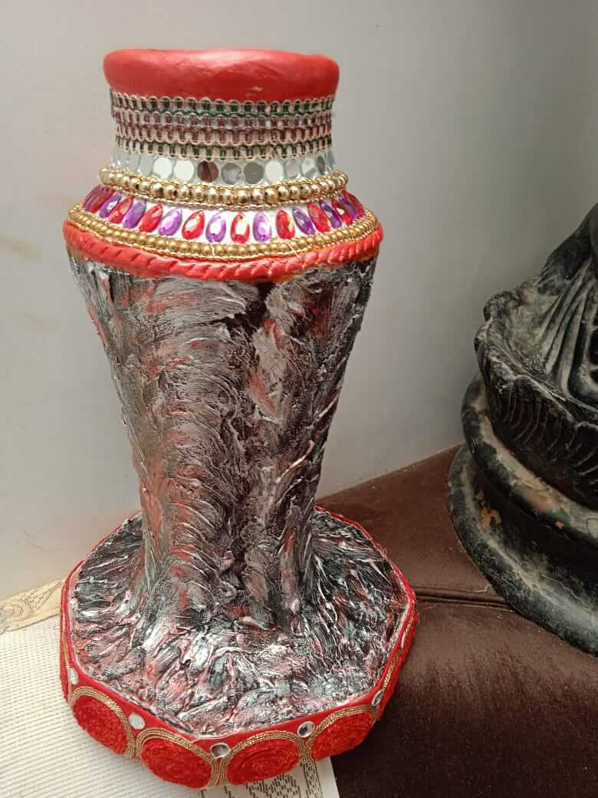
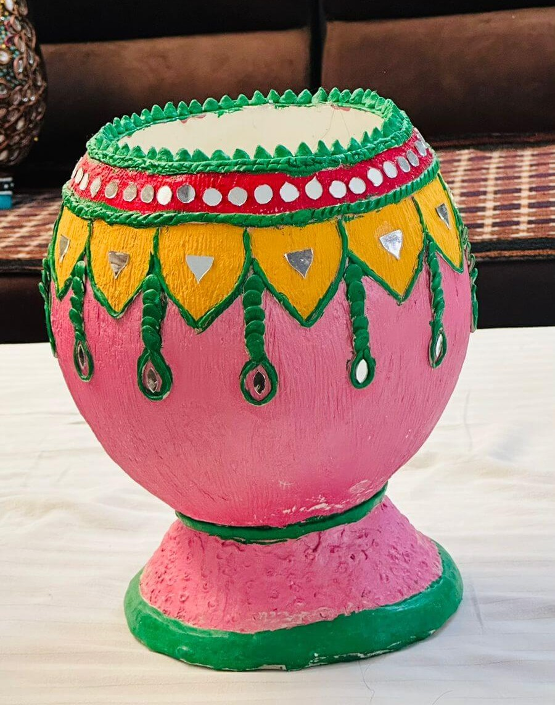
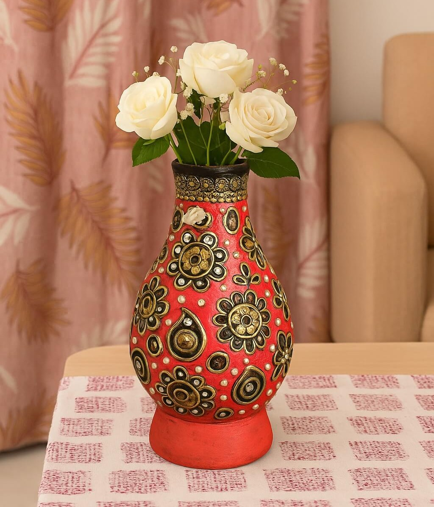
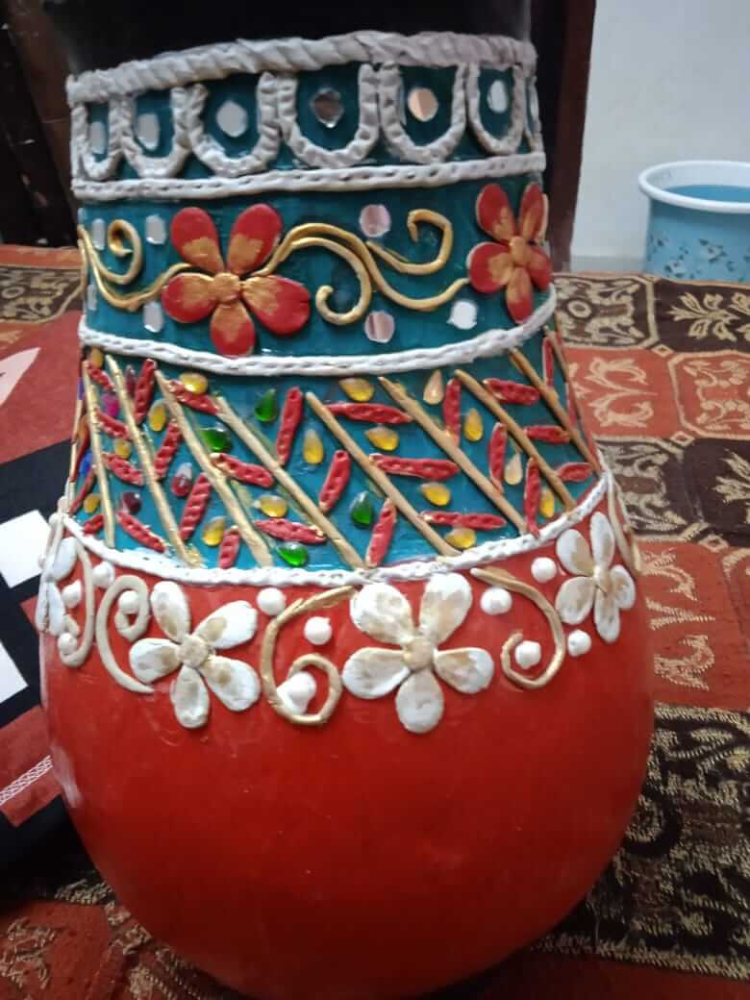
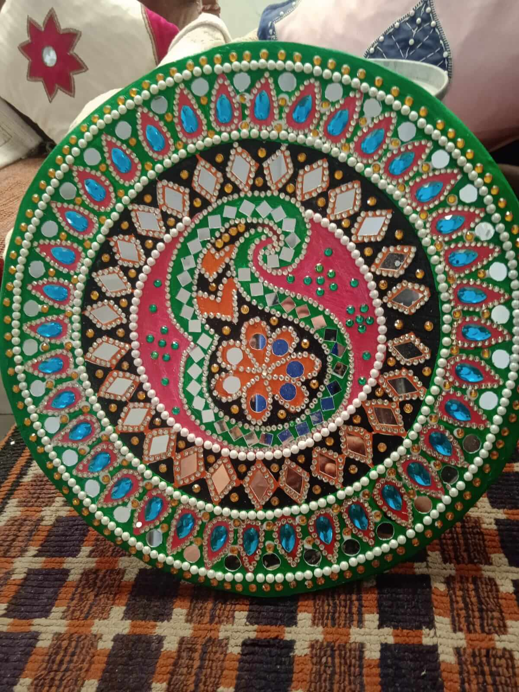
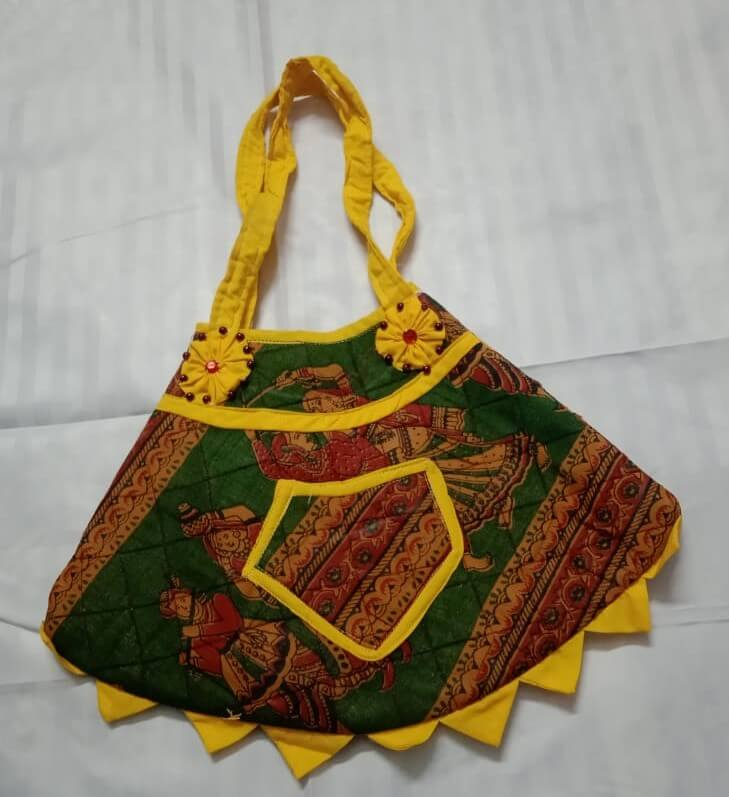
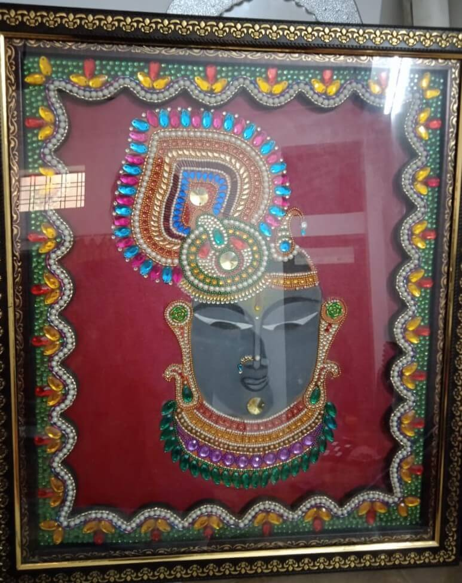
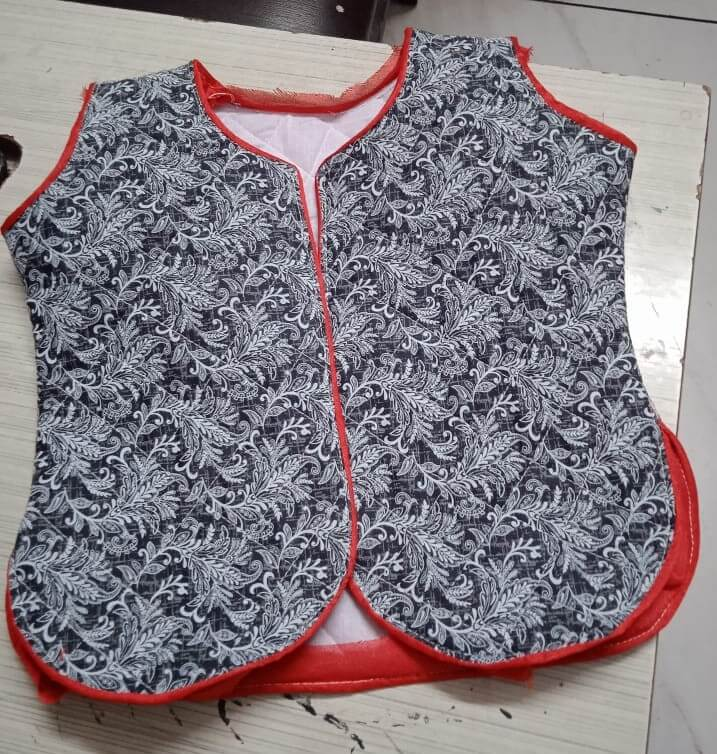
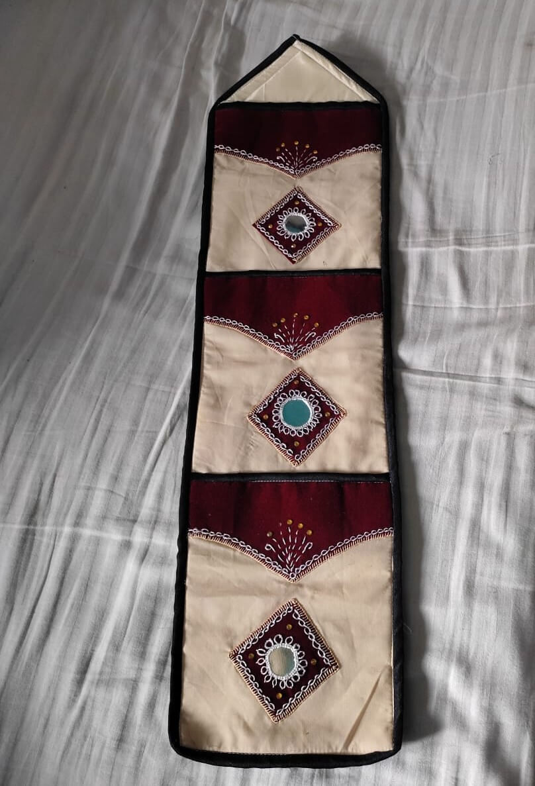

Terracotta pottery is a beautiful traditional art of Jhadol village in Rajasthan. Made from natural clay, every product is crafted with love, patience, and skill. Each piece reflects the culture, warmth, and daily life of rural Rajasthan.
Our NGO supports and trains rural women to create these handmade terracotta products. This gives them confidence, income support, and a strong identity. This is not just pottery; it is their pride and strength.
When you support terracotta art, you support real families, real dreams, and real growth. Together we can keep this heritage alive and help rural women build a better future.
Every terracotta product is handmade using natural clay. No machines, only pure skill.
It carries the beauty of village life, Indian culture, and the gentle touch of
hardworking women artisans.
This clay is not just soil, it is a part of their life, their tradition, and their identity.
Each piece takes time, patience, and love to create. From shaping the clay to giving it
life through beautiful designs, every step is done with care and dedication.
Terracotta pottery reflects the warmth of Rajasthan — its culture, simplicity, and strong
roots. These creations bring a sense of connection to nature and remind us of the art that
has lived through generations. By supporting this craft, we are not only celebrating art
but also supporting the women who create it with pride and hope for a better future.

Kamakshi Mahila Seva Sansthan trains, guides, and supports rural women so they
can become confident and self-reliant. Through terracotta pottery, women learn
real skills that help them earn, support their families, and build a secure future.
This initiative is not just about work, it is about dignity, respect, and identity.
Women who once depended on others now stand proudly on their own feet. They gain
confidence, financial strength, and recognition in society.
By empowering rural women, Kamakshi Mahila Seva Sansthan is helping families grow
stronger, children get better opportunities, and communities move forward with hope
and pride.

Simple. Natural. Meaningful. These handmade clay products add beauty to homes
and carry the soul of Rajasthan. By supporting this art, you are helping
preserve tradition and supporting the hands that create it.
Each creation is crafted slowly and carefully, shaped with patience, and
finished with love. These pieces are not factory-made, they are made by real
people, with real emotions, and real devotion. Every curve, every design, and
every tiny detail reflects culture, heritage, and pride.
Terracotta creations bring warmth to homes, connect people to nature, and
remind us of the art that has lived for generations. When you choose terracotta,
you are not just buying a product — you are becoming part of a story, a
tradition, and a movement that uplifts rural women and protects India’s
beautiful heritage.

We provide hands-on training to village women, helping them learn step-by-step
with patience, guidance, and care. From shaping clay to designing beautiful
terracotta products, every skill is taught practically so they truly understand
and feel confident. This training is not only about learning an art, it is
about giving them strength, belief, and independence.
Through the Skill Training Program, women gain financial support, stability
for their families, and a sense of pride in their work. Many women who once
had limited opportunities now see a brighter future, earn with dignity, and
stand proudly on their own feet. This program helps them grow, support their
families, and build a better life with respect and confidence.

Through this initiative, many rural women have been trained and given the
opportunity to learn valuable skills. These women are now able to support
their families financially and live with more stability and dignity.
Traditional terracotta art, which was slowly fading away, is getting a new
life and respect through their work.
Along with earning, women are gaining confidence, recognition, and emotional
strength. They feel proud of what they create and proud of the change they are
bringing to their homes and communities.
• Many rural women trained
• Families getting financial support
• Traditional art getting new life
• Strong social and emotional confidence

A glimpse of our terracotta craftsmanship



